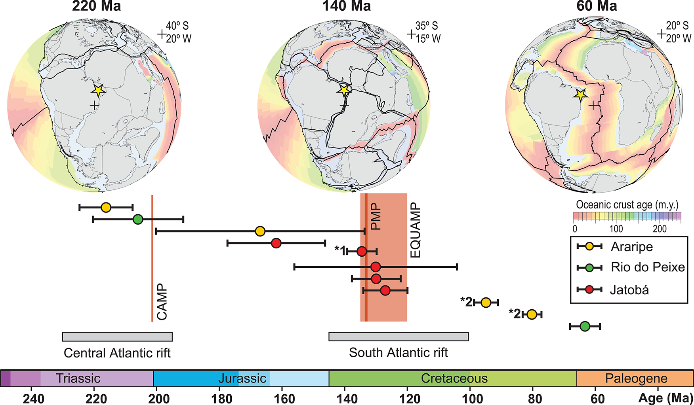

Recurrent tectonic activity in northeastern Brazil during Pangea breakup: Constraints from U-Pb carbonate dating

Resumo em Português
A datação U-Pb em carbonatos de amostras de falhas de borda de rifte de bacias intracontinentais na Província Borborema, Nordeste do Brasil, indica atividade tectônica recorrente durante a fragmentação da Pangeia por mais de 150 Ma, desde o Triássico Superior até o Paleoceno, reativando zonas de cisalhamento transcorrentes neoproterozoicas-cambrianas herdadas. Idades triássicas indicam que a deformação frágil teve início cerca de 80 Ma antes do que se conhecia previamente, muito provavelmente relacionada ao rifteamento ao longo do Atlântico Central incipiente.A subsequente abertura do Atlântico Sul no Cretáceo causou nova atividade em falhas durante o rifteamento e o desenvolvimento das bacias. Além disso, atividade tectônica cenozoica recorrente ao longo das falhas de borda de rifte é indicada, sugerindo que a herança estrutural do sistema de zonas de cisalhamento neoproterozoico-cambriano de escala continental da Borborema foi responsável pela acomodação de tensões tectônicas recorrentes desde o rifteamento mesozoico até os dias atuais.